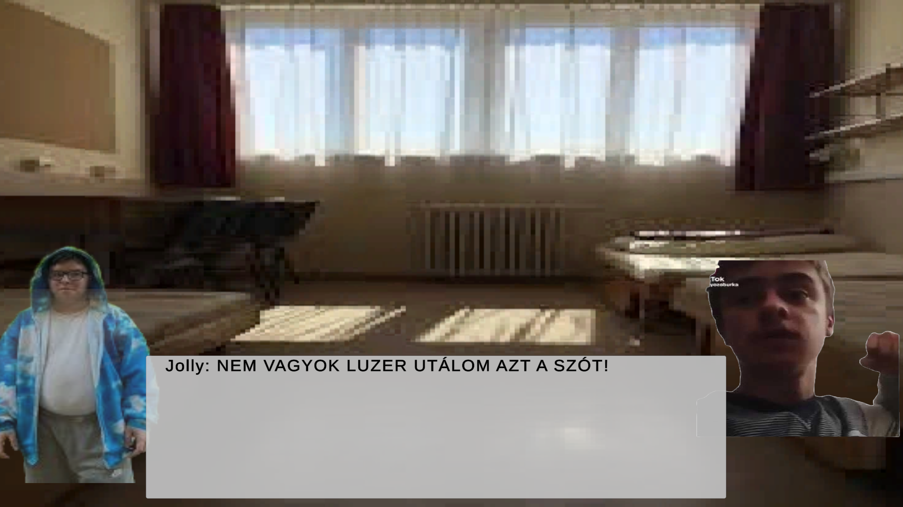
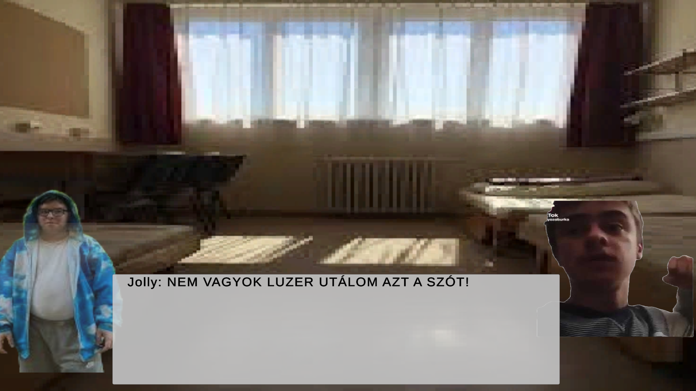

Projektjeim
Fezzo The Game
 


Fezzo The Game egy vizuális novella paródia, amelyben népszerű internetes személyiségek szerepelnek. A játékban egy alapvető harcrendszer található, valamint egy bal klikkel vezérelhető, lineáris párbeszéd-rendszer, amely a történet előrehaladását segíti. A projekt célja egy szórakoztató, humoros élmény nyújtása a játékosoknak.
ZH Applikáció


Ez egy ZH felvevő mobil alkalmazás (v1.2), amely segít a diákoknak nyomon követni a ZH időpontjaikat és felkészülni a vizsgákra. Az alkalmazás intuitív felülettel rendelkezik, lehetővé teszi a tárgyak és vizsgák könnyű hozzáadását, valamint értesítéseket küld a közelgő határidőkről.
Edzés és életvitel Applikáció


Egyszerű és személyre szabott étrendkövetés, étkezési naplózás, egészséges életmód támogatása. Az alkalmazás segít nyomon követni a napi edzéseket, étrendet és egészségügyi mutatókat. Különféle funkciók között megtalálható az edzéstervek létrehozása, étkezések naplózása, vízfogyasztás követése és testi adatok rögzítése.
Kosárlabda Bajnokság Weboldal
Egy átfogó kosárlabda bajnokság kezelő rendszer, eredményeket közzétehetnek. A weboldal tartalmaz egy eredménykövető rendszert, tabellát, játékos statisztikákat és sok mást.